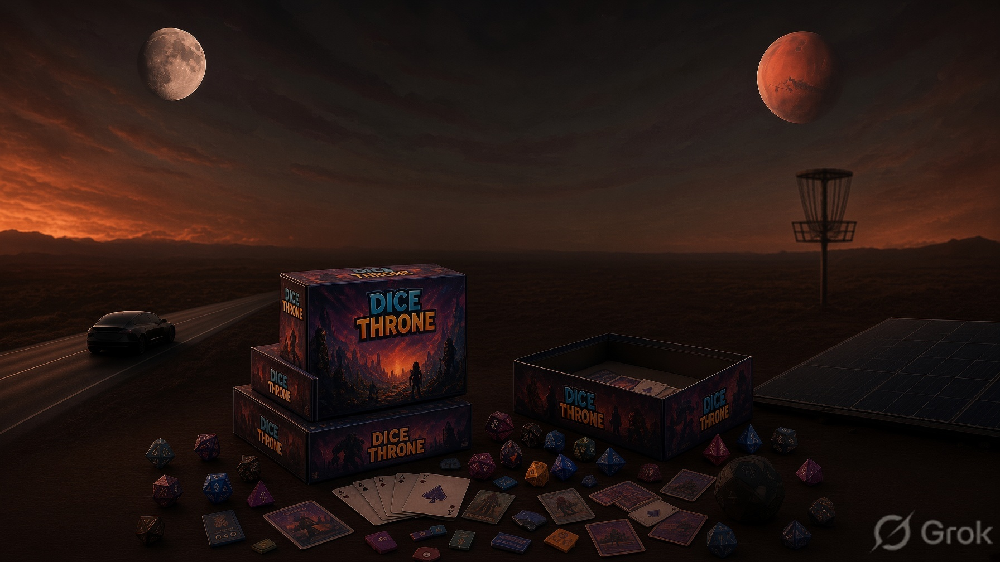

Adam Marcuccio
Get in touchGreater Melbourne.
I sit with the people who do the work, and the systems they are asked to use. klopikkon is that same job, pointed at a small business. Write the process down. Pick the constraint. Change the tool instead of adding another login.
At Medibank, from September 2015 to February 2022, I was a test analyst. One job was still about seven records a person a day. We set up automation that did a hundred in two hours, and the team went from seven people to three.
From February 2022 to November 2025 I was a business analyst at Beamtree, a health data and AI company in Melbourne. I owned work in Jira, built the Salesforce path when a process needed one, ran Scrum, ran the Change Advisory Board, and was 2IC for operations.
Before that I was in front of customers. Sales and service at iiNet from 2012 to 2014, including three months in New Zealand training staff. Then a few months in business development at Azillion in 2015.
linkedin.com/in/adam-m-8531a182
Outside work
Disc golf, table tennis, board games, and travelling Australia. At home I run solar, a Powerwall, and the car so surplus sun and cheap windows do the work without me watching it.
